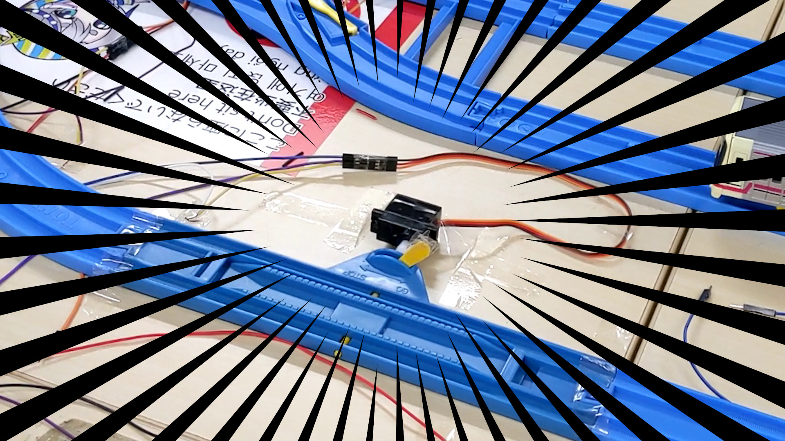
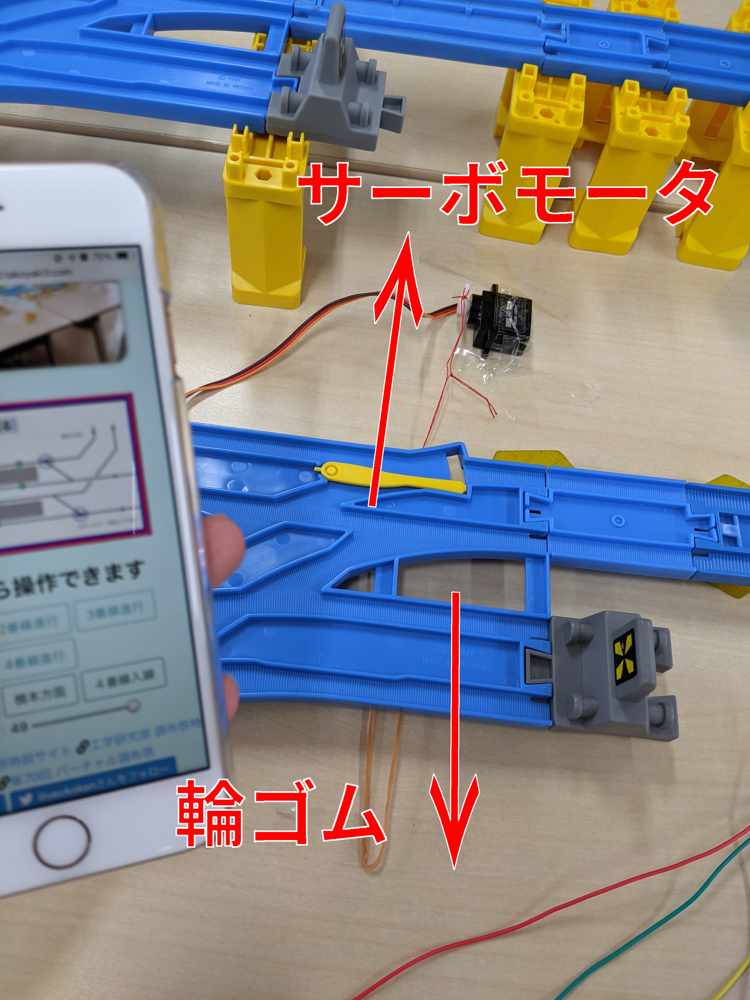
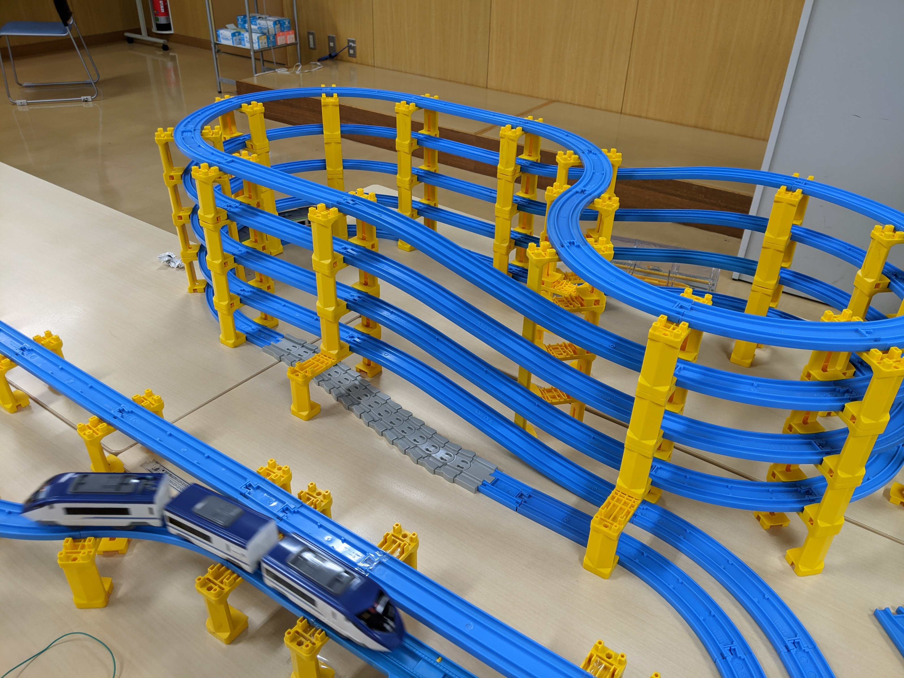
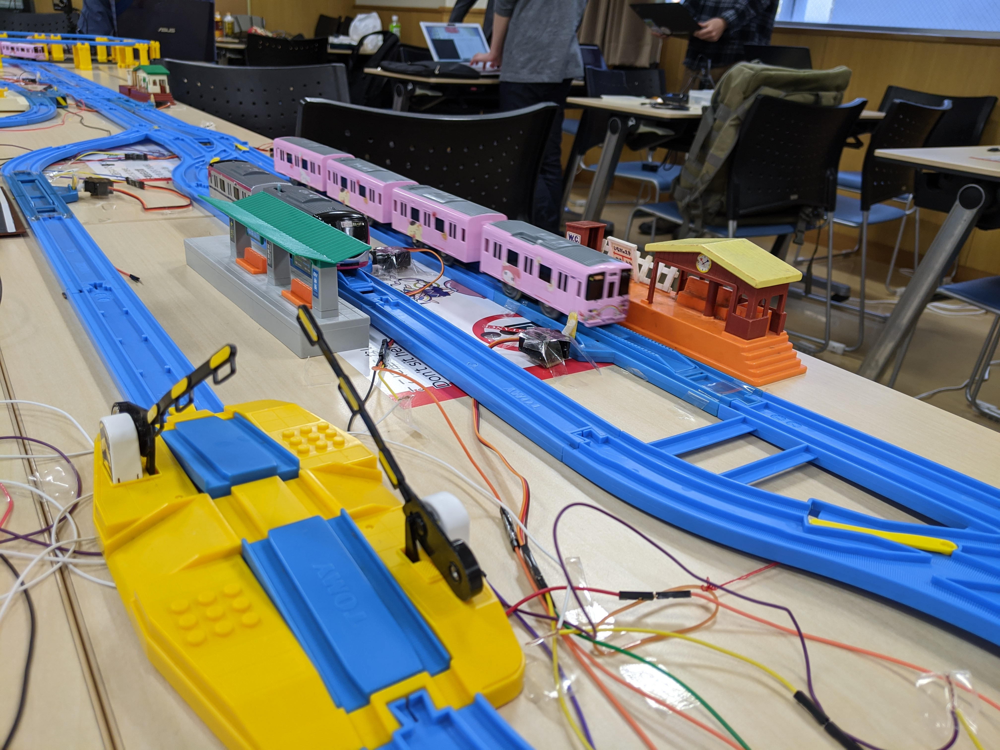
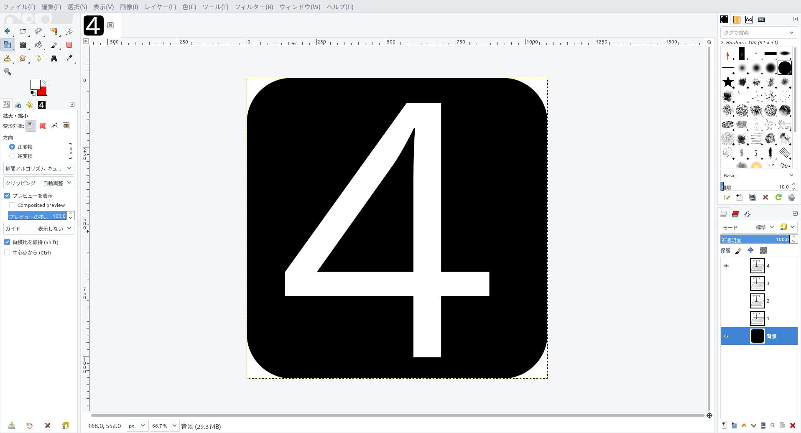

りんりん
調布祭のお手伝いをした話
メリークリスマス！！！！！！ 今日は工学研究部のアドベントカレンダー最終日(UEC koken Advent Calendar 2020)です．皆さんのドベカレの最終日はいつですか？ 調布祭プラレール企画に関わったメンバーで記事をリレー？することになった…のですが，実は私は開発には関わっておらず，当日の設営のお手伝いしかしてません．なので降りるつもりだったのですが，たこやき先輩の押しに負けました．「感想みたいな軽いのでいいから〜」って言われたので，そういう感じで書きます．記事を書くメンバー5人の中でトリを担当するものだと思っていたのですが，まさかドベカレの最終日になってしまいました…技術的な話は多分ないです． 一応ドベカレらしい？記事も先週書いたのでこちらもどうぞ… DiscordでLaTeXを書きたい
調布祭準備日の更に前日
木曜日は5限に授業があったので，私が現場を訪れたのは18:00とかだったと記憶しています．調布祭を舐めていた僕は「僕が行く頃には全部準備終わってるだろうな〜」なんて思っていましたが，もちろんそんなことはなく，僕の目に飛び込んできたのは「桃鉄で遊ぶ鉄研部員」と「一度も試走してないレイアウト」そして「システム開発RTAをしている工研部員」でした．まだまだ僕の手伝うことは残っていそうです． たこやき先輩「じゃありんりんくんはサーボモータ設置お願いします」 僕「どのように設置したらいいんですか…？」 たこやき先輩「んー，こんな感じで！」 僕「(想像してたより力技だ…)」  ここから僕のテープペタペタ作業が始まりました．テープペタペタ貼るだけなので，そんなに大した仕事ではないのですが，場所によって工夫が必要だったりして意外と大変でした．(現にこの日だけでは余裕で貼り終わらなかった) 19:00だか20:00だかそこらで教室を閉じなければいけないらしく，この日はほとんど進まなかったような気がします．(記憶が曖昧)
調布祭準備日
さてサーボモータの固定ですが，意外となかなかスムーズには行きません．高架橋の上に設置されてるレールに取り付ける際にはどうしたらいいのか？ポイントの切り替えは？複線だとサーボモータが干渉してしまう…などなど障壁は多かったです． 1つ目の高架橋問題．別の橋脚を横に並べて，その橋脚にサーボモータを固定することで解決しました．初めはダンボールで台座を作ろうとしたのですが，数も多く面倒なためこの方法に行き着きました． 2つ目のポイント切り替え問題．ポイントレールの切り替えバー？の部分を輪ゴムでどちらか片方に引っ張っておいて，切り替えたいときだけサーボモータで逆の方向に引っ張る仕様になっています．しかしゴムは摩擦が大きく，直接くくりつけるとスムーズに動きにくいので一旦糸を挟むことにしました．輪ゴムを直接括りつける箇所を無くしたので動きがスムーズになりました．  3つ目の複線でモータが干渉する問題．鉄研のみなさんに手伝っていただき，なんとかストップレールを組み替えて設置できました．ありがとうございます． そんなこんなで気づいたら終了時刻…続きは明日です． 僕「明日から調布祭ですよね…？？？？」 先輩「調布祭1日目は準備日だから」 僕「なるほど…(？？？)」 準備日だけでは余裕で終わらなかったので8:00登校することになってしまいました…．週末だしお酒飲みたかったけど朝起きづらくなるので我慢我慢．
調布祭1日目
8:00登校です．もくもくとテープをペタペタ，糸を結んでペタペタしていきます．私がテープをペタぺタしていると続々と先輩方もいらっしゃってシステム開発RTAが始まりました．そしてもちろん調布祭当日なのでレイアウトのYouTubeライブも始まり，僕らの作業風景が全世界に中継されはじめました．
プラレール配信、実質部員のデスマ配信
— る (@ruu_uec) November 21, 2020
とは言ってもテープペタペタと配線が終われば私の仕事も終わりなので，他の皆さんを応援しながら動画と写真撮影に勤しむことにしました．
ひゅう！ pic.twitter.com/c648enufOg
— りんりん (@ybasviel) November 21, 2020
ポイントの自動切り替え映像↑↑↑↑  暇になった私が魔改造した井の頭線↑↑↑↑  特急の通過待ち↑↑↑↑ 写真の奥に遠隔操作システム開発班のみなさんがいますね．おつかれさまです． 夜はMIKUECを見て寝ましょう．
調布祭2日目
2日目です．もう僕がなにか作ることはないだろうと思っていましたが，もともとこの日はシフトが入っていた日だったので10:00頃に登校．するとホーム番号の看板を作って欲しいと部長から仕事が舞い降りました．部室のプリンタを使おうと思ったのですが，サークル棟が空いていなかったので一旦帰宅してgimpでぽちぽち…  実は調布祭カウントダウン企画とパンフレットの画像も私が作ったんですよね．最近やたらとgimpと向き合っている気がします．
パンフレットに私の作った画像が載ってました！(そりゃそう) pic.twitter.com/ea1fPkWbD3
— りんりん (@ybasviel) November 24, 2020
印刷したらダンボールに貼り付けて切って完成です．私のものを作る仕事はこれで終わりです．
高級バーガー美味しかった pic.twitter.com/JdIjfqBkVP
— りんりん (@ybasviel) November 22, 2020
おひるごはんはロールスロイスみたいな名前のバーガー(Carl's Jr)でした．
調布祭3日目
シフトの時間を勘違いしていました．ごめんなさい… お片付けをして調布祭は終わりです．お掃除は 使う前より 美しく！！
工研×鉄研合同プラレール企画、お疲れ様でした！！ pic.twitter.com/rqzy625vFy
— りんりん (@ybasviel) November 23, 2020
今年は忙しい年でしたが，工研に入って本当に良かったです．圧倒的感謝です．